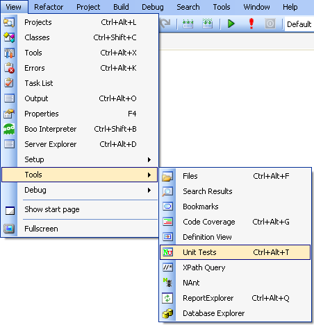
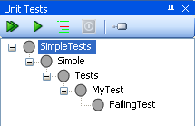
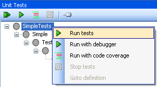
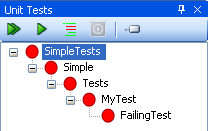
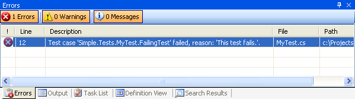
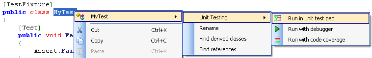

SharpDevelop integrates with NUnit allowing you to run and debug your unit tests inside the development environment.
First you will need a project to hold your tests. From the File menu, select New and then select Solution... to open up the New Project dialog box.
Expand the C# category and select Class Library from the list of available templates. Choose the project's name and location and then click the Create button.
Now create a simple test class. Select the name of the project in the Project Explorer, right click, select Add and then select New Item.... Select the Unit Test template from the C# category, give it a name and then select the Create button. Adding this template to the project will automatically add the required reference to NUnit.Framework. The code shown below is an example of a very basic test class which you can copy into the file just created.
using NUnit.Framework;
using System;
namespace Simple.Tests
{
[TestFixture]
public class MyTest
{
[Test]
public void FailingTest()
{
Assert.Fail("This test fails.");
}
}
}
From the View menu select Tools and then Unit Tests.

This opens up the Unit Tests window.

To run the test from the Unit Tests window click the Run tests toolbar button , or right click a test, and select Run tests.

After a test run, unit tests that pass are shown in green, those that fail in red and those that have not been run in yellow.


As the tests are run messages are displayed in the Output window and after the tests have completed failing tests are added to the Errors window.

Tests can be run from the source code editor by right clicking the test method or test class and selecting one of the Unit Testing menu options.

The menu options allow you to run the test and show the result in the Unit Tests window, or run the test with the debugger so you can step through the code, or run the test and check for code coverage. The last two menu items are also available when running tests from the Unit Tests window.